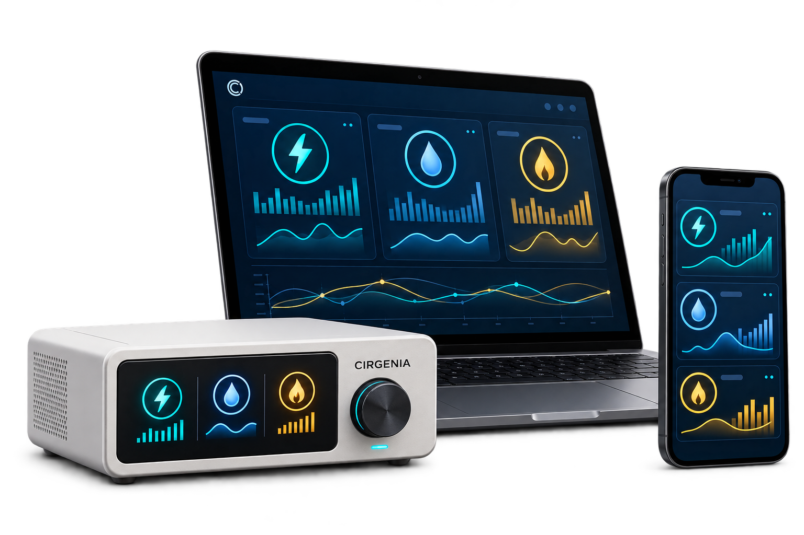

Tout voir au même endroit
Retrouvez l’électricité, l’eau et le gaz dans une interface commune.
L’intelligence au service des ressources
Électricité, eau, gaz. Une seule plateforme pour mieux comprendre votre consommation et agir au quotidien.
Solution en développement

Trois ressources. Une vision d’ensemble.
CIRGENIA développe un dispositif connecté et une plateforme qui réunissent les données de vos ressources. Des informations claires, pour des décisions plus simples.
Retrouvez l’électricité, l’eau et le gaz dans une interface commune.
Des alertes pour comprendre les variations et les usages inhabituels.
Des recommandations pour vous aider à limiter le gaspillage.
Pensé pour l’existant
Notre approche privilégie l’adaptation aux installations compatibles, avec des capteurs ajoutés à l’existant. Un projet ancré dans l’économie circulaire : mieux utiliser les ressources et limiter les remplacements inutiles.
Recueillir les données grâce à des capteurs adaptés à l’installation.
Visualiser les consommations et repérer les changements.
Adapter les usages avec des informations et des recommandations utiles.
La plateforme, en pratique
Explorez un exemple de tableau de bord. Changez de ressource et de période pour découvrir l’expérience CIRGENIA.
Exemple illustratif · Consommation: 20,58 kWh
Aucun capteur connecté. Aucune alerte réelle ni transmission aux services d’urgence.
Une solution, plusieurs usages
Mieux comprendre les habitudes du foyer et les possibilités d’économies.
01Suivre les usages des locaux et identifier les consommations anormales.
02Accompagner une gestion plus attentive des ressources dans les bâtiments.
03CIRGENIA
Nadjia AZIRAANPT, Sidi Abdellah · AlgérieNé en Algérie. Pensé pour demain.
Fondée par Nadjia AZIRA, urbaniste, CIRGENIA explore une gestion plus intelligente de l’électricité, de l’eau et du gaz. Le projet est accompagné au sein de l’incubateur ANPT et s’inscrit dans une démarche d’économie circulaire.
Nous construisons progressivement le dispositif et la plateforme, avec une ambition : rendre la gestion des ressources plus accessible.
CIRGENIA est en développement. Les visuels et le tableau de bord présentent le concept ; ils ne représentent pas encore un produit commercial final.
L’approche vise à conserver les compteurs et installations compatibles. La faisabilité et les modalités de pose devront être vérifiées pour chaque installation.
Les fonctions de détection et d’escalade d’alertes sont à l’étude. Cette démonstration ne détecte aucun danger et ne contacte pas les secours. Les intégrations réelles nécessiteront des validations techniques et des accords adaptés.
Écrivez-nous par e-mail en précisant votre contexte : foyer, entreprise ou institution. Nous pourrons échanger sur vos besoins et les perspectives du projet.
Construisons la suite ensemble
Un besoin, une idée de partenariat, une question ? Échangeons.
cirgenia.dz@gmail.com